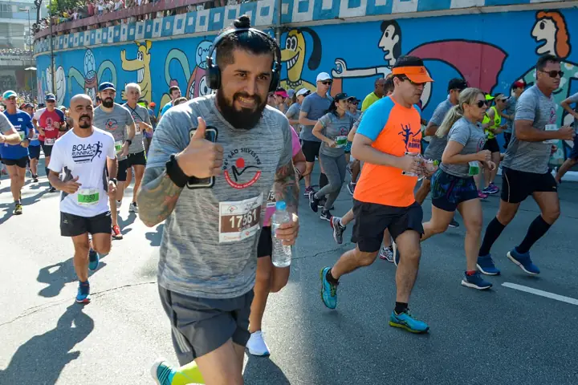

Confirmado
Trilha
Moderada
Cachoeira Escondida
- , 26/set
- Portão da Fazenda Boa Vista
MSpor Marina
ACG+2
Vagas preenchidas5 de 8
Comunidade
Encontre companhia no seu ritmo para a próxima aventura.
6 saídas encontradas
MSpor Marina
RLpor Rafael
BApor Bia

TKpor Thiago
JCpor Júlia
LFpor Lucas